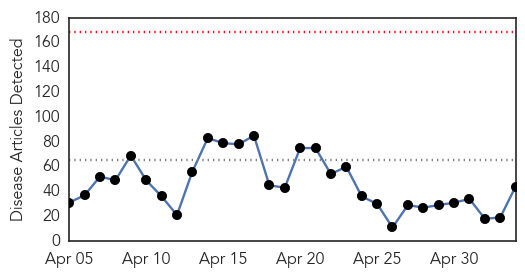
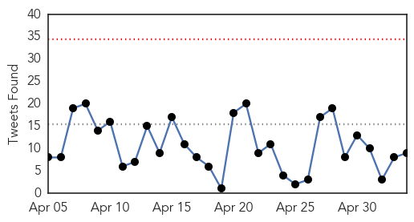
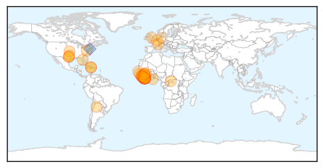
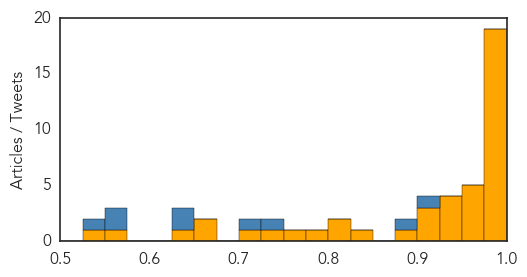
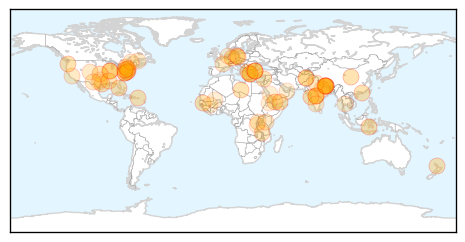

Ebola
30-Day Web Trend
0 alerts, 0 warnings

30-Day Twitter Trend
0 alerts, 0 warnings

Article Locations
Article Confidences
Top Articles:
- 1.000
- New CDC Report Warns of Ebola Contraction in Case of Unprotected Intercourse
- 1.000
- Ebola being spread via sex six months after infection
- 0.999
- Suspected Case Moved To Hospital Isolation Unit In Dusseldorf
- 0.999
- Ebola Survivors Should Use Condoms Indefinitely, CDC Says
- 0.998
- Ebola alert - The virus can spread vie unprotected sex even several months after patients get cured
- 0.998
- As Ebola Approaches Zero, Immunisation Gets a Boost in West Africa
- 0.998
- Ending Ebola before rainy season imperative – UNMEER
- 0.997
- Ebola: CDC recommends non-contact with male survivors’ semen
- 0.997
- Ending Ebola before rainy season imperative - UNMEER
- 0.997
- As Ebola Approaches Zero, Immunisation Gets a Boost in West Africa - Sierra Leone
- 0.996
- Former US leader Clinton praises Liberia progress on Ebola - MyNorthwest
- 0.996
- Former US leader Clinton praises Liberia progress on Ebola
- 0.995
- Ebola Infected Man Hospitalized in Germany
- 0.992
- Ellen hails US Ebola support
- 0.990
- Ebola: Children back to school amid staggering deaths
- 0.990
- LDS missionaries to return to Liberia, Sierra Leone this summer
- 0.985
- World Health Organization Failed at Ebola Response
- 0.979
- UNESCO, Chinese school tech fund helps Liberia recover from Ebola
- 0.977
- Helping Healthcare Workers Improve Hand Hygiene in Ebola-Affected Countries
- 0.970
- Texas Health Resources announces medical scholarship fund in Liberia
- 0.967
- Argentina to ship more drugs to Sierra Leone « Awoko Newspaper
- 0.962
- Suspected Ebola case being treated in Düsseldorf
- 0.961
- Male Ebola Survivors May Still Sexually Transmit the Disease
- 0.953
- Fund in Ebola Victim's Honor to Help in Liberia
- 0.949
- Christian Council expresses worry about Pastors interference with Doctors
- 0.943
- Sierra Leone: As Ebola Approaches Zero, Immunisation Gets a Boost in West Africa
- 0.931
- Burial rites, religious rights and contagious diseases
- 0.929
- Hand hygiene in the control of Ebola and health system strengthening
- 0.915
- Health crises need real-time reporting of good practice
- 0.915
- NAMRU-3: Infectious Disease Physician Describes Rewarding Experience in Ghana
- 0.905
- CONHNOL distributes mosquito nets
- 0.886
- Ebola victim's family says hospital's donation falls short
- 0.825
- BRAC Conducts Psychosocial Counseling for Ebola Survivors
- 0.823
- Kenya : Nurse: I signed will before flying to Ebola-hit Liberia
- 0.801
- Guinea Ebola diary: In the land of lost handshakes
- 0.777
- Guinea Ebola diary: In the land of lost handshakes - Guinea
- 0.765
- Texas Health Resources, Duncan family and SIM USA announce endowed scholarship to train physicians, nurses and physician assistants in Liberia
- 0.737
- 1.8 million School kits boost learning for children in SaLone « Awoko Newspaper
- 0.721
- Sierra Leone university holds ceremony amid Ebola fears
- 0.675
- Amnesty International urges Sierra Leone not to curtail freedom of expression, assembly with Ebola regulations
- 0.666
- Local fundraiser helps Ebola-stricken country
- 0.649
- 800 graduate from FBC « Awoko Newspaper
- 0.571
- Ebola-ready jet prepared for take off
- 0.539
- Bidding Farewell to the ‘True Heroes, Front-liners’ Ebola Burial Team Decommissioned
Top Tweets:
- 0.910
- RT: Liberia is Ebola-free this week 42 days since last patient died. In that time SierraLeone has recorded 115 Ebola deat…
- 0.894
- Report: World Health Organization Failed at Ebola Response - Canada Free Press http://t.co/TPxPNce5sz ebola EVD
- 0.748
- Suspected Ebola case being treated in Düsseldorf - Deutsche Welle http://t.co/1NXrsL3p3j ebola EVD
- 0.706
- New case of Ebola suspected in Germany - The Local.de http://t.co/pyRk7s2L6t ebola EVD
- 0.637
- Orlando Bloom: Ebola still a real threat - CNN International http://t.co/badumTi3Jc ebola EVD
- 0.637
- Orlando Bloom: Ebola still a real threat - CNN International http://t.co/WazmnSisdj ebola EVD
- 0.571
- Possible SexualTransmission of Ebola Virus — Liberia 2015 | @cdcgov http://t.co/svFz903ZJm
- 0.564
- Review: ‘Frontline’ Looks at Missteps During the Ebola Outbreak via http://t.co/HmENxtjlwX infectious disease
- 0.544
- Thanks for partnership & collaboration on critical issues esp Ebola antibiotic stewardship healthcare-associated infections
Unknown
30-Day Web Trend
0 alerts, 0 warnings

30-Day Twitter Trend
2 alerts, 0 warnings

Article Locations
Article Confidences

Top Articles:
- 0.952
- WHO continues providing safe water for health facilities and IDPs - Yemen
- 0.917
- Chicago Tribune
- 0.917
- Chicago Tribune
- 0.917
- Chicago Tribune
- 0.917
- Chicago Tribune
- 0.917
- Chicago Tribune
- 0.917
- Chicago Tribune
- 0.917
- Chicago Tribune
- 0.917
- Chicago Tribune
- 0.917
- Chicago Tribune
- 0.917
- Chicago Tribune
- 0.917
- Chicago Tribune
- 0.917
- Chicago Tribune
- 0.917
- Chicago Tribune
- 0.917
- Chicago Tribune
- 0.917
- Chicago Tribune
- 0.917
- Chicago Tribune
- 0.917
- Chicago Tribune
- 0.917
- Chicago Tribune
- 0.917
- Chicago Tribune
- 0.917
- Chicago Tribune
- 0.917
- Chicago Tribune
- 0.917
- Chicago Tribune
- 0.917
- Chicago Tribune
- 0.917
- Chicago Tribune
- 0.917
- Chicago Tribune
- 0.917
- Chicago Tribune
- 0.917
- Chicago Tribune
- 0.917
- Chicago Tribune
- 0.895
- Health Dep't confirms outbreak of respiratory illness
- 0.882
- Waikato DHB mulls over flu jab or mask policy
- 0.857
- Lyme Disease Continues To Spread With Hotter Weather And More Ticks
- 0.835
- CVS Health Announces New Clinical Affiliations with Leading Health Care Organizations in Louisiana and Mississippi
- 0.828
- Jeb Bush: No hace falta gastar mil millones de dólares en una campaña
- 0.808
- Bird flu under control in Turkey say officials
- 0.801
- Luapula Province to have an ICU at Mansa General Hospital
- 0.780
- Health minister says on alert against bird flu after town suffers outbreak
- 0.780
- Health minister says on alert against bird flu after town suffers outbreak
- 0.779
- domain-b.com : WHO sets up field office in Nepal's Gorkha dist for unreachable survivors
- 0.761
- Hospitals back to normal in quake-hit Nepal's capital - Xinhua
- 0.721
- Indonesia hosts conference on typhoid, Invasive NTS Disease
- 0.687
- Authorities Say Texas High School Plagued With STD Outbreak
- 0.686
- Medical tourism; Uganda’s top health care destinations
- 0.674
- PUBLIC HEALTH: Scientists tackle the 'difficult problem' of how warming spreads Lyme disease -- Monday, May 4, 2015 -- www.eenews.net
- 0.667
- Let’s promote health education
- 0.667
- Vaccine Confidence in the United States: A New Report
- 0.662
- Rs 9.6cr to Tackle Pavagada's Water Supply Problems
- 0.658
- Nepal faces risk of epidemics: Chinese experts
- 0.651
- Helping yourself by helping your doctor
- 0.649
- UPDATE: Digby hospital lifts visiting restrictions
Showing top 50 articles...
Top Tweets:
-
No tweets found for May 04, 2015